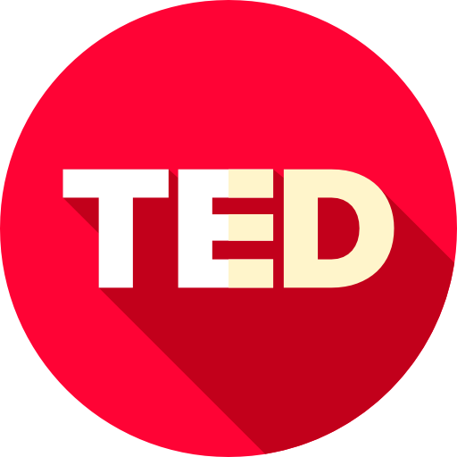

¿Qué es estar lejos?
Estar lejos no significa necesariamente haber perdido un vínculo. La distancia, tanto física como emocional, nos lleva a recordar los momentos compartidos y a reconocer cuánto significan las personas en nuestra vida.

Estar lejos no significa necesariamente haber perdido un vínculo. La distancia, tanto física como emocional, nos lleva a recordar los momentos compartidos y a reconocer cuánto significan las personas en nuestra vida.
No siempre. Muchas veces, la distancia fortalece el cariño y mantiene viva la ilusión de volver a encontrarnos y compartir momentos juntos
Los recuerdos, las fotografías, las conversaciones y las enseñanzas nos permiten mantener presentes a quienes están lejos o ya no están. Los vínculos no dependen únicamente de la presencia física, sino también de todo lo que permanece en nosotros.
¿Por qué esperamos a que alguien esté lejos para reconocer cuánto significaba compartir tiempo con esa persona?